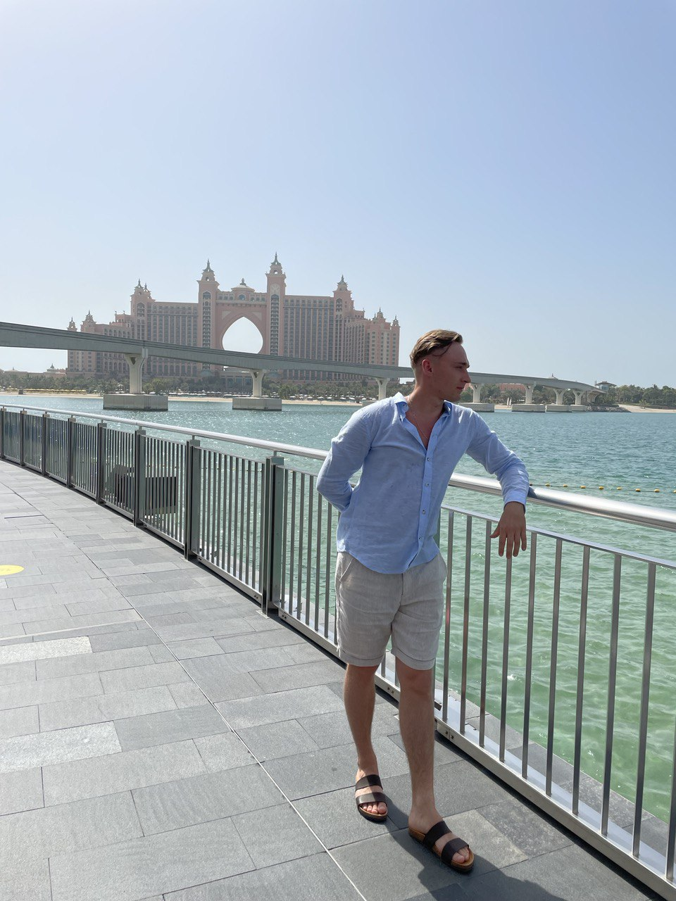
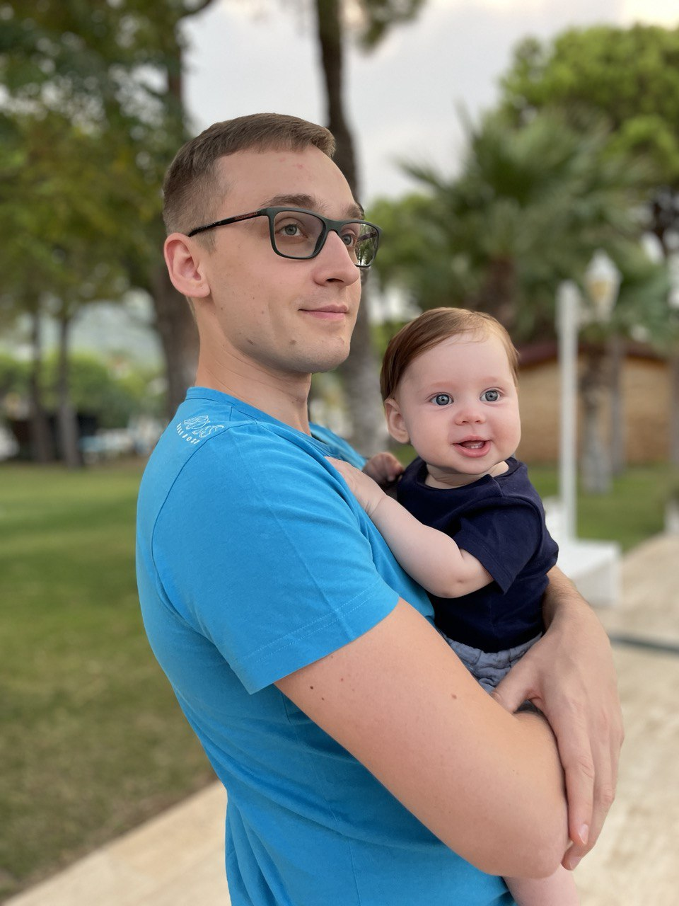
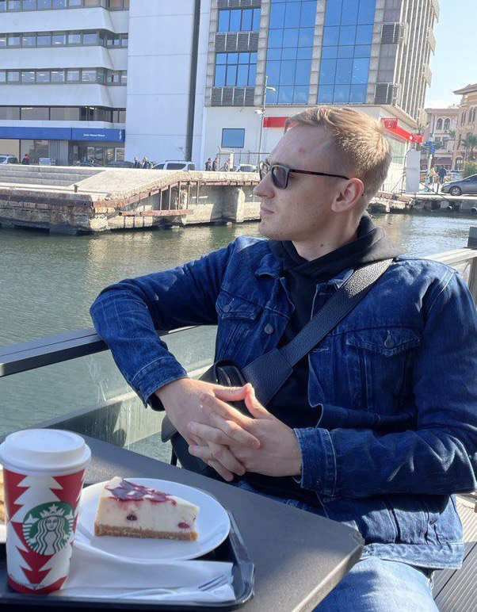

| Photo | About me | Facts | Contacts |
|  |  |
|  |
Немного о себе
Меня зовут Алексей Головийчук, мне 29 лет и на данный момент я студент школы Elbrus Bootcamp. Я родился в городе Севастополь, Украина. С самого детства мы с родителями много переезжали и свою юность я провёл в Подмосковном городе Клин. Закончил РГУ нефти и газа имени И. М. Губкина, работал в АО «Мособлгаз», курировал направление «Социальная газификация».
Я очень люблю путешествовать, проходил обучение английскому языку на Мальте, хотел постичь дзен в Тайланде, отдыхал в Доминикане, научился не переживать по пустякам на Занзибаре, в ОАЭ узнал, что стану отцом 🥳 Сейчас живу с семьей в солнечном Измире (Турция) и мечтаю стать разработчиком в одной из зарубежных компаний и о сменяемости власти в государствах! хD
5 фактов обо мне
- Занимался плаваньем;🏊♂️
- Участвовал в соревнованиях по пауэрлифтингу в 2021 г.; 🏋️♂️
- Отец прекрасного, улыбчивого Макса;👶
- Летал на пароплане;🚀
- Работал геодезистом.👷♂️
Контакты